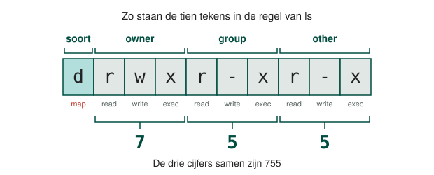

Elk bestand en elke map op een Linux-machine draagt drie soorten rechten, en die staan los ingesteld voor drie soorten gebruikers. Dat zijn negen schakelaars per bestand, en je leest ze alle negen af uit één regel tekst.
| Recht | Letter | Op een bestand | Op een map |
|---|---|---|---|
| read | r |
De inhoud lezen | De namen zien die erin staan |
| write | w |
De inhoud wijzigen | Er iets in maken, hernoemen of wissen |
| execute | x |
Het uitvoeren als programma | Erin gaan met cd |
Die drie rechten staan drie keer ingesteld, telkens voor een andere groep mensen.
Er geldt er altijd precies één. Ben je de eigenaar, dan tellen de rechten van owner voor jou, ook al zit je toevallig ook in de groep. Ben je dat niet maar zit je in de groep, dan tellen die van group. En zo niet, dan die van other.
De root gebruiker mag elk bestand lezen en schrijven, wat er ook ingesteld staat. Je kan een bestand
dus niet met chmod voor root afschermen: zet je alle negen schakelaars af, dan geraakt
niemand er nog aan behalve root.
Met ls -alh zie je van elke naam in een map wie de eigenaar is, bij welke groep ze hoort en
welke rechten erop staan. De map /home van een machine met vier gebruikers ziet er zo
uit.
total 20K
drwxr-xr-x 5 root root 4,0K Apr 12 11:24 .
drwxr-xr-x 24 root root 4,0K Apr 12 10:31 ..
drwxr-xr-x 23 elm elm 4,0K Apr 14 09:29 elm
drwxr-xr-x 3 labopartner1 labopartner1 4,0K Apr 12 10:57 labopartner1
drwxr-xr-x 2 labopartner2 labopartner2 4,0K Apr 12 10:36 labopartner2
De eerste tien tekens van zo'n regel zijn de negen schakelaars, met er één voor. Ze staan altijd in dezelfde volgorde, en een streepje betekent dat het recht op die plaats niet gegeven is.

| Wat er staat | Wat het betekent |
|---|---|
d |
Een map. Een gewoon bestand heeft hier een streepje |
rwx |
De owner mag lezen, schrijven en erin gaan |
r-x |
De group mag lezen en erin gaan, en er niets in wijzigen |
r-x |
other mag hetzelfde als de group |
elm (eerste keer) |
De naam van de owner |
elm (tweede keer) |
De naam van de group |
Dat de twee namen hier hetzelfde zijn, komt door de groep die adduser bij elke gebruiker
aanmaakt. Het zijn wel degelijk twee verschillende dingen, en je kan ze los van elkaar wijzigen.
Elk groepje van drie letters is ook één cijfer van 0 tot 7. Zet een 1 op elke plaats waar
een letter staat en een 0 waar een streepje staat, en lees die drie bits als een getal:
r weegt 4, w weegt 2 en x weegt 1.
| Letters | Bits | Cijfer | Wat mag |
|---|---|---|---|
--- |
000 |
0 |
Niets |
--x |
001 |
1 |
Alleen execute |
-w- |
010 |
2 |
Alleen write |
-wx |
011 |
3 |
Write en execute |
r-- |
100 |
4 |
Alleen read |
r-x |
101 |
5 |
Read en execute |
rw- |
110 |
6 |
Read en write |
rwx |
111 |
7 |
Read, write en execute |
De map elm hierboven draagt dus 755: een 7 voor de owner, een 5 voor de group en
een 5 voor other.
Met chmod geef je de drie cijfers en de naam van het bestand of de map.
Je geeft altijd alle drie de cijfers, ook wanneer je er maar één wil wijzigen: wat je typt vervangt de
negen schakelaars in hun geheel. Zet je 600 op een bestand, dan mag de owner het lezen en
schrijven, en mag verder niemand het openen, root uitgezonderd.
| Cijfers | Letters | Wat het betekent |
|---|---|---|
600 |
rw------- |
Alleen de owner leest en schrijft |
644 |
rw-r--r-- |
De owner leest en schrijft, de rest leest mee |
700 |
rwx------ |
Alleen de owner, en hij mag het ook uitvoeren |
755 |
rwxr-xr-x |
De owner mag alles, de rest lezen en uitvoeren |
chmod raakt alleen de negen schakelaars aan. Wie de owner is en welke group eraan hangt, zijn
twee andere gegevens, en die hebben elk hun eigen commando.
| Commando | Wat het wijzigt | Voorbeeld |
|---|---|---|
chmod |
De negen rechten | chmod 640 tekst.txt |
chown |
De owner | sudo chown rechten2 tekst.txt |
chgrp |
De group | sudo chgrp rechten tekst.txt |
De laatste twee vragen sudo, ook wanneer het over je eigen bestand gaat. Zonder die regel
zou je je bestanden aan iemand anders kunnen opdringen, en dat is nu net wat een systeem waar meer dan
één mens op werkt moet tegenhouden.
Wijzig je de owner of de group, dan verandert er niets aan de negen letters. Wat er wel verandert, is wie
er onder welk groepje valt: geef je een bestand aan de group rechten, dan gelden de drie
letters in het midden vanaf dat moment voor iedereen die in die groep zit, en vallen alle anderen terug
op other.